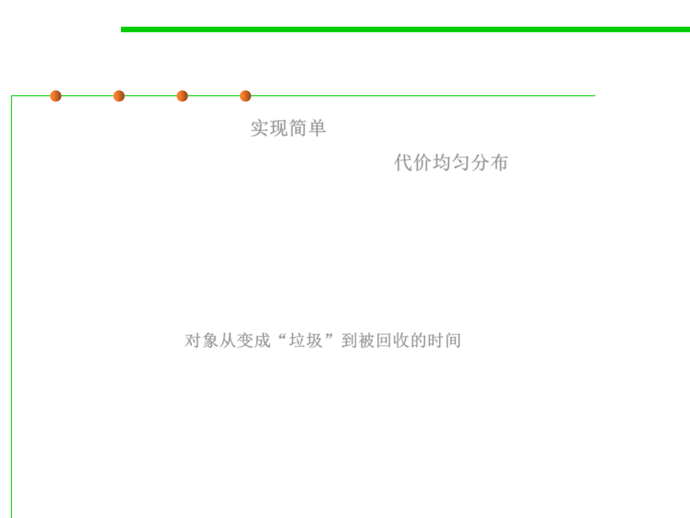

8.1 Metrics, Principles, and Methods of Construction for Performance
Advantages of reference counting
▪ Simple to implement 实现简单
▪ Costs distributed throughout program 代价均匀分布
▪ Good locality of reference: only touch old and new targets‘ RCs
▪ Works well because few objects are shared and many are
short-lived
▪ Zombie time minimized
– the zombie time is the time from when an object becomes garbage until
it is collected 对象从变成“垃圾”到被回收的时间
▪ Immediate finalization is possible (due to near zero zombie time)